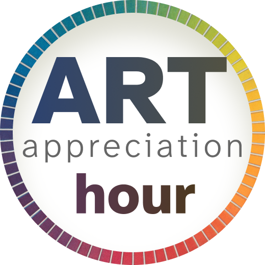

One artwork, one hour, shared with fellow art lovers.
Welcome
We look closely at a single artwork, spend time in quiet contemplation, and share what we observe and feel. Same artwork, different perspectives, over Zoom.
About
Art Appreciation Hour is inspired by Slow Art Day , a global annual event held in April where people meet at a museum or gallery and carefully look at art.
It’s also inspired by a community of practice I started and led at my last corporate job. Within three years, I organized and facilitated 80 Zoom meetups where colleagues around the world gathered for an hour of conversation and show-and-tell about AI. I loved the community-building and the conversations, so I wanted to do something similar, focused on the visual arts.
I feel that gathering with people who love art for art’s sake is so important to feeling good and finding meaningful connections with others and our creative spirits ❤️
Next event: Monday, December 7, 2026
The invitation and Zoom link are shared through School of the Possible
- When (in your time zone):
- Monday, December 7, 2026, 8–9 AM PT
- Artwork focus: Marc Chagall’s I and the Village
Take a look at I and the Village ahead of time:
- Its Wikipedia page
- Its MoMA webpage (Museum of Modern Art in New York; part of the MoMA collection)
- A Scholastic Art webpage
Agenda
- 5 minutes: Hellos and introductions
- 5 minutes: Introduction to the artwork
- 10 minutes: Silent looking
- 35 minutes: Conversation
- 5 minutes: Ideas for the next artwork and goodbyes
Notes from past event
- #1: Remedios Varo's Harmony – 2026 November 9